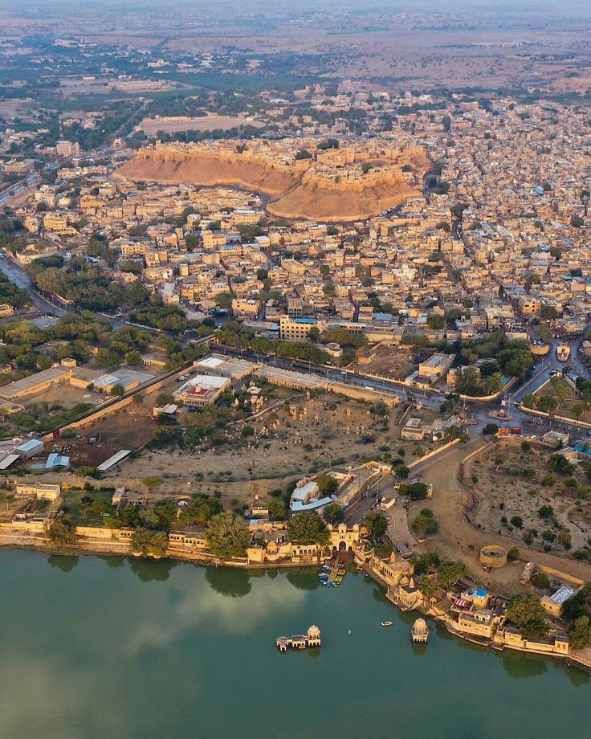
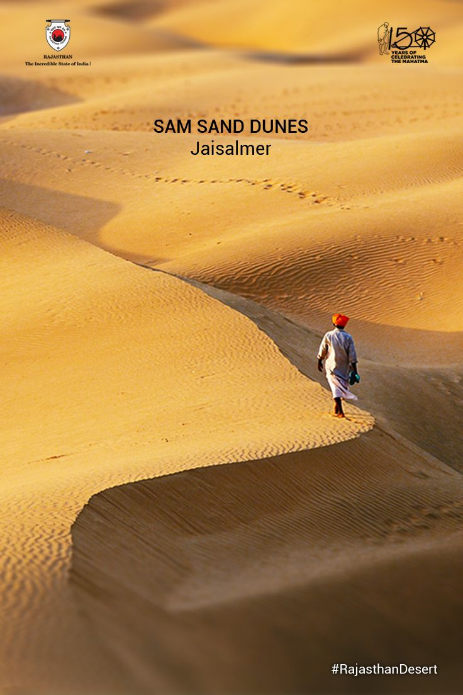
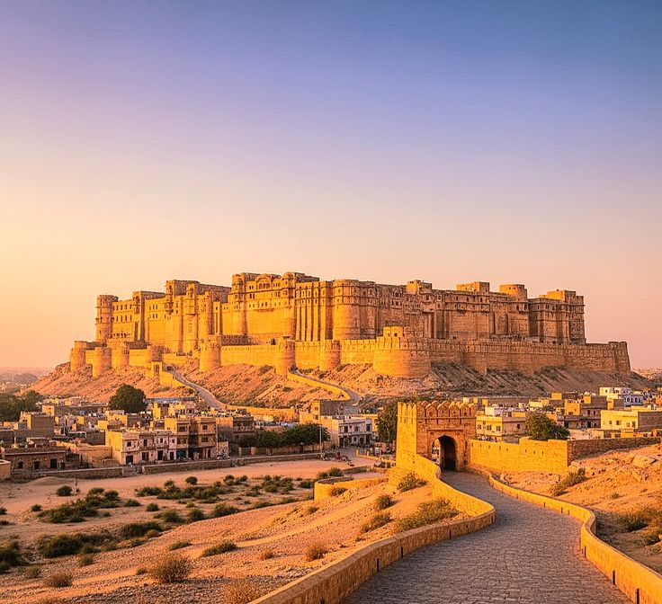
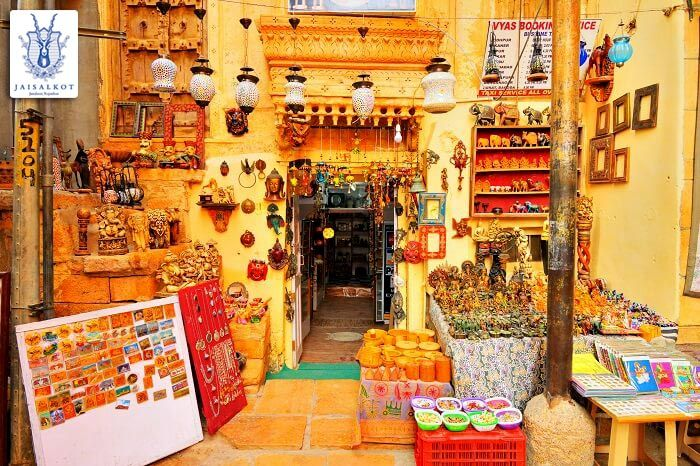
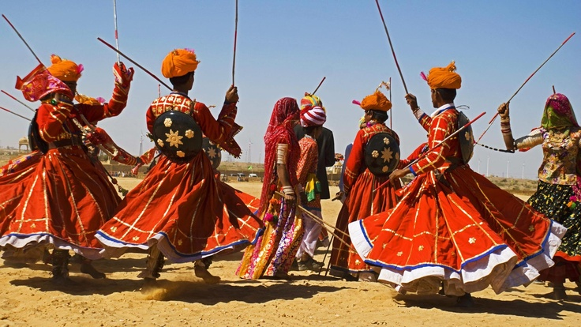
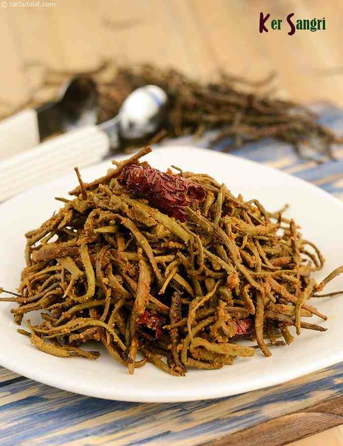

Jaisalmer Over_all View
Jaisalmer, the “Golden City,” is located in the heart of the Thar Desert. Known for its yellow sandstone architecture, desert landscapes, and cultural heritage, it is a jewel of Rajasthan.
Peaceful Nature Spot (Sam Sand Dunes)
Sam Sand Dunes offer a mesmerizing desert experience with camel rides, sunset views, and cultural performances. It is one of the most popular attractions near Jaisalmer.


Historical Place (Jaisalmer Fort)
Jaisalmer Fort, also known as Sonar Quila, is a living fort with shops, houses, and temples inside. Built in the 12th century, it is a UNESCO World Heritage Site and a symbol of desert heritage.
Local Market (Manak Chowk)
Manak Chowk is a vibrant market near Jaisalmer Fort, offering handicrafts, textiles, jewelry, and souvenirs. It reflects the colorful spirit of the desert city.


Famous Festival (Desert Festival)
The Desert Festival of Jaisalmer is celebrated with folk music, dance, camel races, and cultural performances. It showcases the traditions and vibrancy of desert life.
Famous Local Food Items (Meals → Ker Sangri)
Ker Sangri is a traditional Rajasthani dish made with desert beans and berries. It is a specialty of Jaisalmer, reflecting the unique flavors of desert cuisine.
